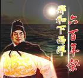

百家讲坛 孔庆东看金庸的武侠小说
介绍：
金庸的武侠小说写尽了人生百态，而小说里的主要人物，无一不是金庸自身各个阶段的思想反映，纵观金庸小说的武侠人物，它又是金庸成思想变化的历程展现。1955年，30岁的金庸以一部《书剑恩仇录》涉足武林，随后《雪山飞狐》《射雕英雄传》《飞狐外传》也冲出江湖...

百家讲坛 说聊斋
介绍：
《聊斋志异》谈狐说鬼，瑰丽迷人，这些神奇变幻的精灵们不知拨动过多少人的寂寞的心弦，触发过多少人的神外之思。《聊斋志异》，一个花鬼狐妖的世界，一篇篇亦庄亦谐的故事。蒲松龄笔下的美女为什么总会爱上书生？远离人间的牛鬼蛇神为什么比君子更可爱？

百家讲坛 《红楼梦》里的配角_上
介绍：
《红楼梦》里描写了几百个人物，除主要人物外，一些看似微不足道的小人物也栩栩如生，不同凡响。
百家讲坛 二战人物
介绍：
在第二次世界大战结束暨世界反法西斯战争胜利六十周年的日子里，《百家讲坛》栏目隆重推出大型系列节目《二战人物》，用当代视角回望二战，用人文视角关注人物。多年从事二战研究与教学的中国人民解放军国防大学战略教研室教授、第二次世界大战研究会理事马骏博士将精彩讲述这些二战人物的是非成败，功过得失。
百家讲坛 爱的四重奏
介绍：
周国平，当代著名学者，他既是一位哲学家，也是一位诗人。他用散文的笔调写他的哲学思考，用哲学思考来贯穿他的文学写作。他的很多作品表达了对女性独特的认识。男人怎样看女人？爱情的本质究竟是什么？是爱情在变，还是我们对爱情要求太高了昵...

百家讲坛 老子与百姓生活
介绍：
熟悉老子可能从《老子》开始，那么老子到底是怎样一个人呢?老子和孔子是什么关系？老子是如何教人们重生、贵生的？老子是如何处理爱情婚姻和家庭和谐的？老子的人际交往是识人之道究竟怎样？

百家讲坛 刘心武揭秘《红楼梦》
介绍：
本节目是著名作家刘心武在央视所作的红学系列讲座，基本囊括他通过文本细读和原型研究，对《红楼梦》进行探索的总体思路和基本心得，是刘心武研究成果的重要汇报。其内容涉及《红楼梦》概况总说、曹雪芹家世与历史背景、各种探佚线索与分析等...
百家讲坛 明十七帝疑案
介绍：
湮没在历史烟尘中的大明王朝不仅有着17位帝王的奇异人生，更有着277年的江山社稷，有着幅员辽阔的国土，有着卷帙浩繁的《永乐大典》，有着天下无敌的庞大舰队……明王朝曾经的强盛与辉煌从未逊色于清朝。然而，因为历史年代的久远，因为清王朝的抹煞...

百家讲坛 汉代风云人物_上
介绍：
百家讲坛 汉代国策风云
介绍：
“无为而治”是道家的一种思想，主张“清静无为”，“顺自然”。可以说，无为而治的国策在汉朝初年起到了休养生息的作用，社会经济形势获得了复苏，形成了“文景之治”的大好局面。然而，经过了休养生息后，初步走向繁荣的汉帝国，仍然面临内忧外患...
百家讲坛 探秘中国汉字
介绍：

百家讲坛 郑和下西洋600年祭
介绍：

百家讲坛 正说清朝二十四臣
介绍：
百家讲坛 智商与情商
介绍：

百家讲坛 方尔加讲孔子
介绍：

百家讲坛 正说三国人物
介绍：

百家讲坛 经典中的爱情
介绍：
自古以来，有关爱情的话题从来没有衰减过，多少文人墨客为之挥毫泼墨，撰写各式各样的爱情故事。在我国的古典文学中.有关爱情的描写不胜枚举，它始终是古典文学中最重要的一个表现。那里有肝肠寸断的生死恋，有缠绵悱恻的相思之恋，也有人类最理想的爱情...

百家讲坛 地域文化的形成
介绍：
沿着历史的轨迹，追根溯源，揭示不同的地域文化差异。上海复旦大学葛剑雄教授将带我们领略地域文化的魅力，感受沉淀五千年的文明记忆。中国幅员辽阔，民族众多，所以人们常说，百里不同风，千里不同俗。比如南方人习惯吃细粮，北方人喜欢吃粗粮...

百家讲坛 古代希腊
介绍：

百家讲坛 周思源也说秦可卿
介绍：
秦可卿，《红楼梦》里的一位特殊女性。她是宁国府三代单传的重孙媳妇，位列金陵十二钗正册的第十二位。在她出场的短短八回之中，秦可卿似乎显得那么与众不同，疑团重重。然而，秦可卿真的有那么多的谜团吗？她之所以迷雾重重，是因为她的出身特别，还是曹雪芹故意设下的阅读陷阱...

百家讲坛 未成系列
介绍：